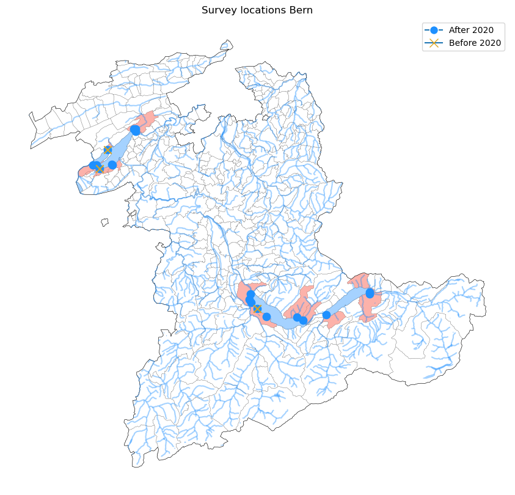
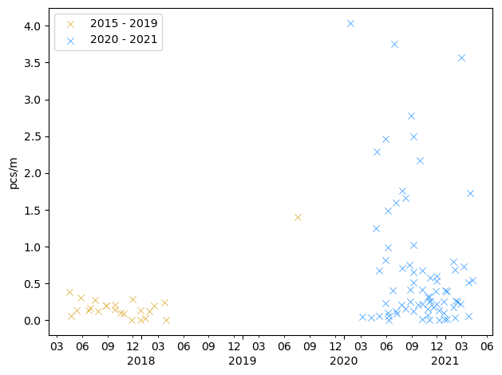

---------------------------------------------------------------------------
ModuleNotFoundError Traceback (most recent call last)
Cell In[1], line 2
1 from dotenv import load_dotenv
----> 2 from langchain_chroma import Chroma
3 from langchain_core.runnables import RunnablePassthrough
4 from langchain_openai import OpenAIEmbeddings, ChatOpenAI
ModuleNotFoundError: No module named 'langchain_chroma'
USER_AGENT environment variable not set, consider setting it to identify your requests.
Fetching pages: 100%|###########################| 10/10 [00:02<00:00, 4.03it/s]
Canton Bern Lakes#
Vital Statistics#
Political boundaries
The data analysis focuses on survey locations within the administrative boundaries of the canton of Bern. Specifically, the surveys span from November 15, 2015, to December 31, 2021. The study includes 19 survey locations distributed across 13 cities, all within Bern. The cities surveyed are Unterseen, Biel/Bienne, Vinelz, Thun, Brienz (BE), Spiez, Lüscherz, Nidau, Beatenberg, Ligerz, Bönigen, Gals, and Erlach. Additionally, there is a single survey area identified as Aare. The surveyed regions are confined to the canton of Bern, with no other cantons included in the study.
Features of interest
The survey data under analysis for the period from November 15, 2015, to December 31, 2021, covers three lakes in the canton of Bern. These lakes are Thunersee, Bielersee, and Brienzersee. No rivers or parks are included in this study. The analysis encompasses 19 survey locations across 13 cities within the canton of Bern, specifically focusing on Unterseen, Biel/Bienne, Vinelz, Thun, Brienz (BE), Spiez, Lüscherz, Nidau, Beatenberg, Ligerz, Bönigen, Gals, and Erlach. Additionally, there is a single survey area identified as Aare.
Summary of survey results
The beach-litter survey conducted in Bern between November 15, 2015, and December 31, 2021, revealed an average of approximately 0.71 objects per meter. The data, collected from 74 samples, indicated significant variability in litter density. The 90% interval, which spans from the 5th to the 95th percentile, ranges from 0.02 objects per meter to 2.598 objects per meter. This interval reflects a broad distribution of litter densities across the surveyed areas. The standard deviation of 0.912 further underscores the variability in the litter data, with a maximum recorded density of 4.04 objects per meter.
Inventory and Most Common
The beach-litter survey conducted in Bern from January 26, 2020, to April 8, 2021, identified a total of 2,180 objects across 74 samples. The two most common categories of litter found were cigarette filters (code G27) and food wrappers for candy and snacks (code G30). Cigarette filters were the predominant type of debris, with a total quantity of 1,563 items, which accounts for approximately 71.7% of the total debris. The average density for cigarette filters was 0.475676 objects per meter, with a fail rate of 83.78%. The second most common category was food wrappers, with 565 items making up about 25.9% of the overall count. The average density for food wrappers was 0.21527 objects per meter, and the fail rate was 82.43%. These two categories alone comprised over 97% of the total debris collected during the survey.
code |
quantity |
pcs/m |
% of total |
sample_id |
fails |
rate |
object |
|---|---|---|---|---|---|---|---|
G27 |
1,563 |
0.475676 |
71.7% |
74 |
62 |
83.78% |
Cigarette filters |
G30 |
565 |
0.21527 |
25.9% |
74 |
61 |
82.43% |
Food wrappers; candy, snacks |
Markdown(sampling_stratification['answer'])
Sampling stratification
The sampling stratification quantifies the proportion of samples collected based on the proportion of the buffer zone dedicated to specific land use features. Each survey location is surrounded by a buffer zone with a radius of 1,500 meters, and this zone includes various land-use features, each occupying a certain proportion (0-100%) of the buffer zone. The stratification helps understand how the distribution of land-use features within the buffer zone influences the sampling process.
Buffer Zone Proportions and Sampling Distribution:
0-20% Buffer Zone:
Buildings: 31% of samples were collected where 0-20% of the buffer zone is dedicated to buildings.
Wetlands: All samples (100%) were collected from locations with wetlands within this buffer zone.
Forest: 24% of samples were from locations where 0-20% of the buffer had forest presence.
Public Services, Recreation, Undefined Features: All samples noted these features at this level.
Streets: 45% of the samples were associated with streets.
Vineyards and Orchards: All samples (100%) were located within this buffer zone.
20-40% Buffer Zone:
Buildings: 38% of samples were collected from locations with buildings.
Wetlands: No samples were taken from wetlands.
Forest: 66% of the samples represented forested areas.
Public Services and Recreation: No samples were collected.
Undefined Features: 8% of samples were associated with undefined features.
Streets: 8% of samples were related to streets.
40-60% Buffer Zone:
Buildings: 22% of samples were dedicated to buildings.
Wetlands: No samples were taken from wetlands.
Forest: Only 9% of samples represented forest.
Public Services: No samples were recorded.
Undefined Features: 57% of samples fell into this category.
Streets: 19% of samples indicated the presence of streets.
60-80% Buffer Zone:
Buildings: 7% of samples were linked to buildings.
Wetlands: No samples were taken from wetlands.
Forest: No samples were noted.
Undefined Features: 0% of samples were associated with undefined features.
Streets: 20% of samples were related to streets.
80-100% Buffer Zone:
Buildings: Only 3% of samples were attributed to buildings.
Wetlands and Forest: No samples were taken.
Public Services, Recreation, Undefined Features, Streets, Vineyards, and Orchards: No contributions in this buffer zone.
This stratification allows for grouping locations according to the topographical features present within the buffer zone and helps in understanding how the observed litter density changes based on these land use features.
Sampling stratification
The sampling stratification quantifies the proportion of samples collected based on the proportion of the buffer zone dedicated to specific land use features. Each survey location is surrounded by a buffer zone with a radius of 1,500 meters, and this zone includes various land-use features, each occupying a certain proportion (0-100%) of the buffer zone. The stratification helps understand how the distribution of land-use features within the buffer zone influences the sampling process.
Buffer Zone Proportions and Sampling Distribution:
0-20% Buffer Zone:
Buildings: 31% of samples were collected where 0-20% of the buffer zone is dedicated to buildings.
Wetlands: All samples (100%) were collected from locations with wetlands within this buffer zone.
Forest: 24% of samples were from locations where 0-20% of the buffer had forest presence.
Public Services, Recreation, Undefined Features: All samples noted these features at this level.
Streets: 45% of the samples were associated with streets.
Vineyards and Orchards: All samples (100%) were located within this buffer zone.
20-40% Buffer Zone:
Buildings: 38% of samples were collected from locations with buildings.
Wetlands: No samples were taken from wetlands.
Forest: 66% of the samples represented forested areas.
Public Services and Recreation: No samples were collected.
Undefined Features: 8% of samples were associated with undefined features.
Streets: 8% of samples were related to streets.
40-60% Buffer Zone:
Buildings: 22% of samples were dedicated to buildings.
Wetlands: No samples were taken from wetlands.
Forest: Only 9% of samples represented forest.
Public Services: No samples were recorded.
Undefined Features: 57% of samples fell into this category.
Streets: 19% of samples indicated the presence of streets.
60-80% Buffer Zone:
Buildings: 7% of samples were linked to buildings.
Wetlands: No samples were taken from wetlands.
Forest: No samples were noted.
Undefined Features: 0% of samples were associated with undefined features.
Streets: 20% of samples were related to streets.
80-100% Buffer Zone:
Buildings: Only 3% of samples were attributed to buildings.
Wetlands and Forest: No samples were taken.
Public Services, Recreation, Undefined Features, Streets, Vineyards, and Orchards: No contributions in this buffer zone.
This stratification allows for grouping locations according to the topographical features present within the buffer zone and helps in understanding how the observed litter density changes based on these land use features.
requesting = 'Please summarize the following sections:'
sections_to_summarize = 'Topography and trash density Bern 2015-11-15 2021-12-31: The changes in the observed litter density and the changes in land use'
instructions = "Provide a narrative paragraph, and the table of values. note where the pcs/m is highest and lowest. Please label your response '### Topography and trash density'"
instructions = "".join(instructions)
sampling_stratification = data_chait.invoke({'input': f'{requesting} {sections_to_summarize}\n\nInstructions\n\n{instructions}'})
glue('stratification-pcs-m', Markdown(sampling_stratification['answer']), display=False)
Topography and trash density
From the beach-litter survey data, we observe how litter density varies based on different topographical features and land-use categories. The data is categorized into five indices, each reflecting different average pieces of trash per meter (pcs/m) for various land-use types. In the first index, the highest litter density is observed in undefined areas with 1.14731 pcs/m, while the lowest is in streets with 0.350606 pcs/m. In the second index, undefined areas again show the highest density at 1.175 pcs/m, whereas wetlands, public services, recreation, vineyards, and orchards report no litter (0 pcs/m). The third index reveals buildings with the highest density at 1.83188 pcs/m and wetlands, public services, recreation, vineyards, and orchards again showing no litter. For the fourth index, streets exhibit the highest litter density at 1.942 pcs/m, with several categories including wetlands, forest, public services, recreation, vineyards, and orchards showing no litter. Lastly, in the fifth index, streets have the highest density at 0.5 pcs/m, with no litter observed in wetlands, forest, public services, recreation, vineyards, and orchards. This data highlights significant variability in litter density across different land-use types, with undefined areas and streets often showing higher litter densities.
buildings |
wetlands |
forest |
public-services |
recreation |
undefined |
streets |
vineyards |
orchards |
|
|---|---|---|---|---|---|---|---|---|---|
1 |
0.608261 |
0.710946 |
0.359444 |
0.710946 |
0.710946 |
1.14731 |
0.350606 |
0.710946 |
0.710946 |
2 |
0.235714 |
0 |
0.907959 |
0 |
0 |
1.175 |
0.681667 |
0 |
0 |
3 |
1.83188 |
0 |
0.235714 |
0 |
0 |
0.374524 |
0.344286 |
0 |
0 |
4 |
0.414 |
0 |
0 |
0 |
0 |
0 |
1.942 |
0 |
0 |
5 |
0.32 |
0 |
0 |
0 |
0 |
0 |
0.5 |
0 |
0 |
Cluster Analysis
The cluster analysis of beach-litter survey data in Bern, spanning from November 15, 2015, to December 31, 2021, reveals notable differences in both cluster composition and average litter density per cluster. The survey locations were grouped using K-Means clustering, with the optimal number of clusters determined using the elbow method. Each cluster represents a unique mix of land use proportions and average litter density.
Cluster 0 is characterized by a high proportion of buildings (59.1%) and streets (36.4%), with a moderate amount of forest (22%) and undefined areas (18.9%). This cluster also has the highest average density of personal use litter, with 1.23192 objects per meter of beach.
Cluster 1, on the other hand, has a significant proportion of forest (53.7%) and undefined areas (24.5%), with fewer buildings (15.9%) and streets (8.5%). This cluster has the lowest average density of personal use litter, at 0.147857 objects per meter of beach.
Cluster 2 is dominated by undefined areas (54.1%) and streets (49.7%), with moderate proportions of buildings (30.9%) and a small amount of forest (10.7%). The average density of personal use litter here is 0.492941 objects per meter of beach.
Cluster 3 has a high proportion of undefined areas (55%) and a notable amount of forest (27.1%), with minimal buildings (4.7%) and no streets. This cluster shows an average personal use litter density of 0.695833 objects per meter of beach.
Finally, Cluster 4 is predominantly composed of buildings (68.2%) and streets (25.2%), with some forest (15.3%) and undefined areas (14.9%). The average density of personal use litter in this cluster is 0.356 objects per meter of beach.
These differences highlight the varying impact of land use on litter density, with urbanized areas (high buildings and streets) generally showing higher litter densities compared to more natural or undefined areas.
Cluster |
Public Services |
Buildings |
Forest |
Undefined |
Vineyards |
Streets |
Recreation |
Personal Use Litter Density (objects/meter) |
|---|---|---|---|---|---|---|---|---|
0 |
0.024 |
0.591 |
0.220 |
0.189 |
0 |
0.363896 |
0.005 |
1.23192 |
1 |
0.007 |
0.159 |
0.537 |
0.245 |
0 |
0.084519 |
0.005 |
0.147857 |
2 |
0.061 |
0.309 |
0.107 |
0.541 |
0.020 |
0.49708 |
0.025 |
0.492941 |
3 |
0.003 |
0.047 |
0.271 |
0.550 |
0 |
0 |
0.155 |
0.695833 |
4 |
0.044 |
0.682 |
0.153 |
0.149 |
0.015 |
0.251846 |
0.005 |
0.356 |
Cluster analysis and land-use#
Does the average density per cluster, support any conclusions that could be drawn given the land-use profile?
Is their any possible correlations?
Certainly!
The average density per cluster does indeed support some conclusions related to the land-use profiles in the region of Bern. For example, Cluster 0, which exhibits a high proportion of buildings (59.1%) and streets (36.39%), has the highest average density of personal use litter at 1.23192 objects per meter of beach. This suggests a correlation between high building density and litter presence, likely due to increased human activity. Conversely, Cluster 1, with a significant proportion of forest (53.7%) and lower building density (15.9%), has a much lower average litter density of 0.147857 objects per meter of beach, indicating that areas with more natural land cover such as forests tend to have less litter. Cluster 2 also supports this observation; with relatively high street presence (49.71%) and a lower forest proportion (10.7%), the average litter density is moderate at 0.492941 objects per meter. This suggests that street areas, which facilitate human transport and activity, may contribute to higher litter densities. Clusters that have high proportions of undefined land use and low building presence, such as Cluster 3, also show a moderate average litter density of 0.695833 objects per meter. Finally, Cluster 4, which features the highest building proportion (68.2%) and moderate street presence (25.18%), has a relatively lower average litter density of 0.356 objects per meter, possibly indicating areas where urban management strategies might mitigate litter despite high human activity. Overall, these correlations imply that higher land use for buildings and streets is associated with increased beach litter, while natural land covers like forests tend to correlate with lower litter densities.
Regression Analysis#
Summary of Regression Methods
The regression analysis conducted between November 15, 2015, and December 31, 2021, evaluated various linear and ensemble regression models using land-use features identified in the land-use profile. The models tested included Linear Regression, Random Forest Regression, Gradient Boosting Regression, and Theil-Sen Regression, with subsequent application of Bagging and Voting schemes on the model exhibiting the lowest R² value. The results indicated that the Gradient Boosting Regression model achieved the highest R² value of 0.440842 and the lowest mean squared error (MSE) of 0.347197, making it the most effective model in the analysis. The performance of other models was as follows: Linear Regression (R² = 0.322546, MSE = 0.420651), Random Forest Regression (R² = 0.260129, MSE = 0.459407), Theil-Sen Regressor (R² = 0.373587, MSE = 0.388957), Bagging with Gradient Boosting Regression (R² = 0.39959, MSE = 0.372812), and the Voting model (R² = 0.381679, MSE = 0.383933). The overall results underscore the superior predictive power of the Gradient Boosting Regression model, yet the R² values suggest moderate accuracy. Consequently, while the Gradient Boosting Regression model demonstrates the most promise among the tested models, the moderate R² values suggest that predictions should be treated with cautious optimism, recognizing that the models may not capture the full complexity of the data.
Forecasts for 2025
Grid Forecast Overview
A grid forecast is a technique used in Bayesian inference to estimate the posterior distribution of parameters. This method involves discretizing the parameter space into a grid and evaluating the posterior probability at each point. It is particularly useful when the posterior distribution lacks a closed-form solution and when the parameter space is relatively low-dimensional, making a grid search feasible.
Forecast Methods
Weighted Prior Forecast:
This method uses a weighted combination of survey results from locations similar to the likelihood.
The expected average sample total is 2.0732.
The 90% Highest Density Interval (HDI) ranges from 0 to 12.42.
Percentile rankings are as follows: 5th percentile is 0.06, 25th percentile is 0.25, 50th percentile (median) is 0.70, 75th percentile is 2.195, and 95th percentile is 12.42.
The maximum value predicted by the model is 13.66.
Observed 99th Percentile Forecast:
This method utilizes samples taken from the same location but prior to the specified date range.
The expected survey results indicate an average value of 0.7114.
The 90% HDI ranges from 0 to 2.46.
Percentile rankings are as follows: 5th percentile is 0, 25th percentile is 0.1375, median is 0.285, 75th percentile is 0.855, and 95th percentile is 2.1845.
The maximum value predicted by the model is 3.78.
Estimation of Probable Range of Values
Given the results from the two forecast methods, we can estimate the probable range of values for 2025:
Based on the Weighted Prior Forecast, the sample total might fall between 0 (minimum) and 12.42 (90% HDI max), with a predicted maximum possible value of 13.66.
Based on the Observed 99th Percentile Forecast, the sample total might fall between 0 (minimum) and 2.46 (90% HDI max), with a predicted maximum possible value of 3.78.
Therefore, a conservative probable range of values for the sample total in 2025 would be between 0 and 12.42, considering the upper limits of the 90% HDIs from both forecast methods.